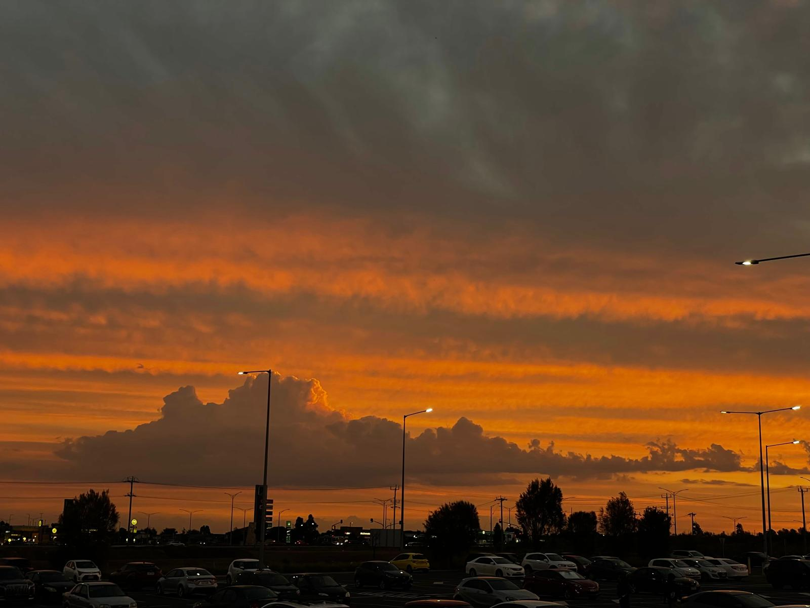
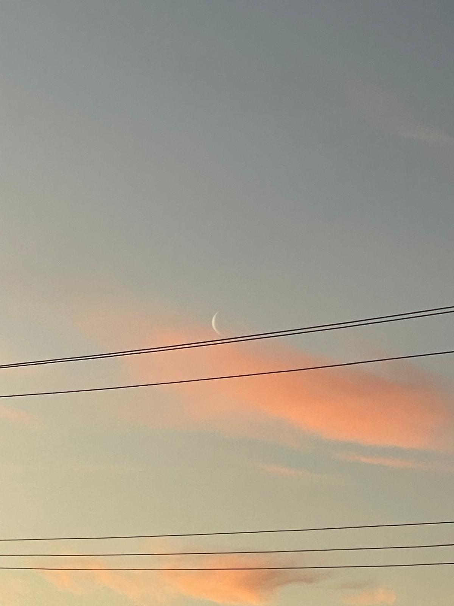
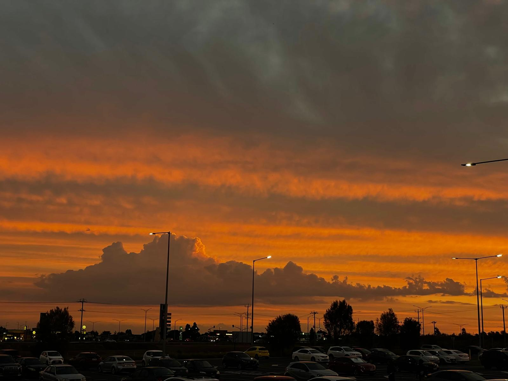
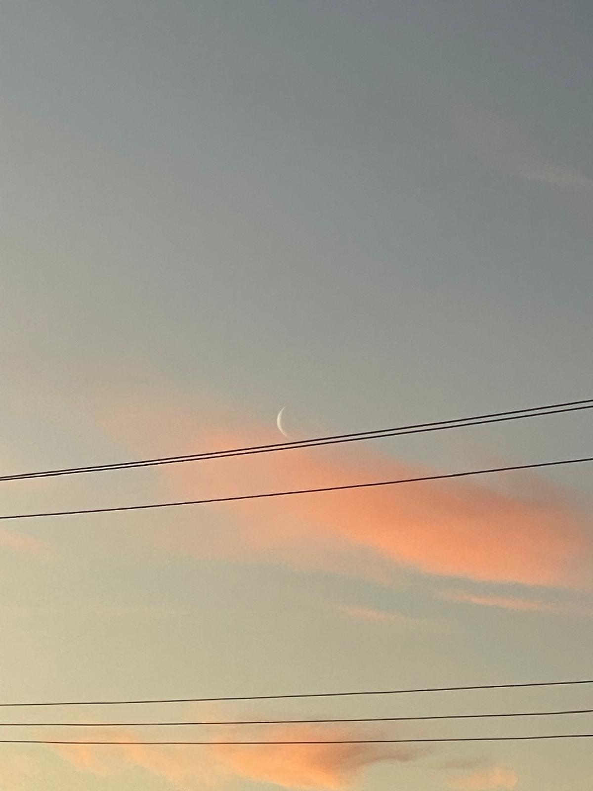
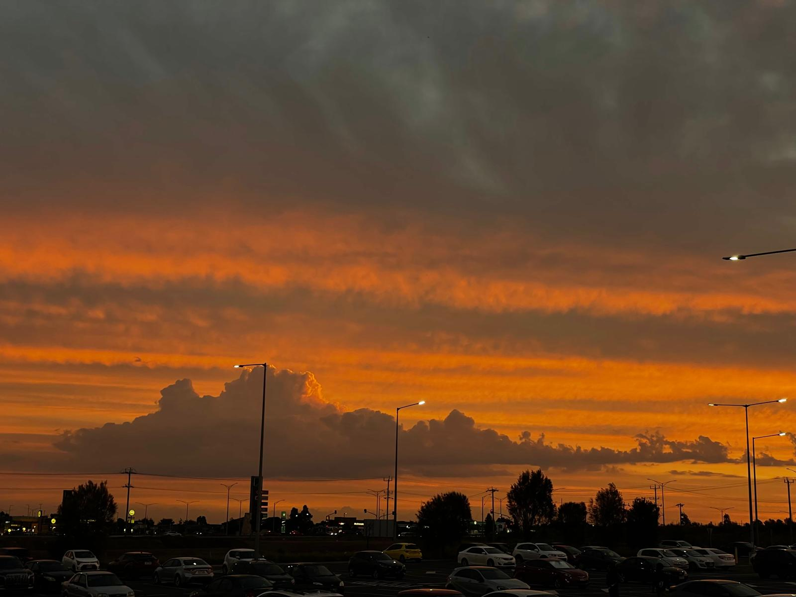
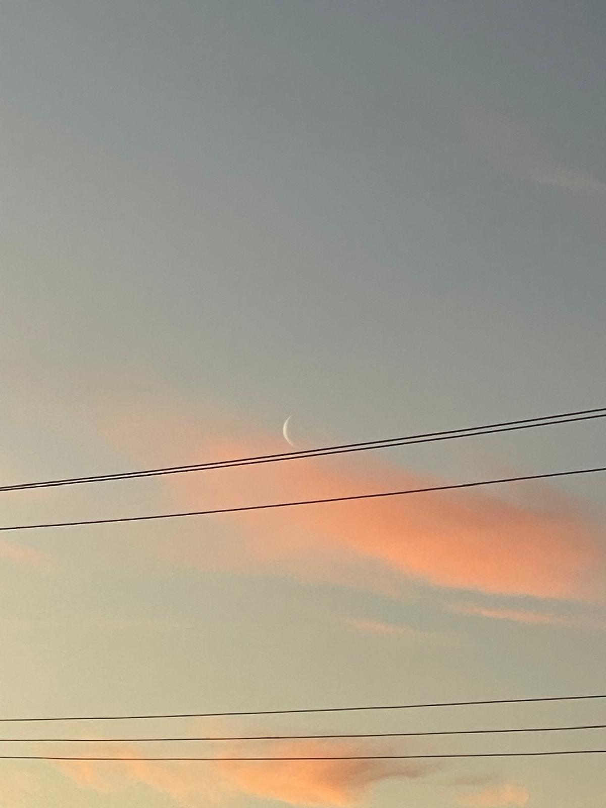

Want to know more? Here’s some of my photography.

 



Product & UI designer adventurous, curious and confident.
Hi! I’m Rumaysa Fatima, a Melbourne‑based UI/UX design student with an eye for systems and the small details that make them human. My background in visual design and front‑end thinking lets me bridge aesthetics and usability—crafting interfaces that simply work and quietly delight.
I believe good design starts with empathy and ends with measurable impact. My practice focuses on accessible patterns, inclusive research and purposeful motion.
Outside of pixels, you’ll find me chasing golden hours with a camera in hand. Scroll on to explore a few frames.

